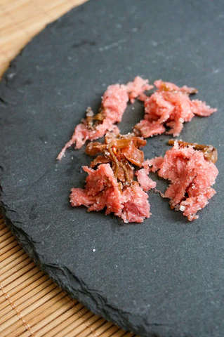
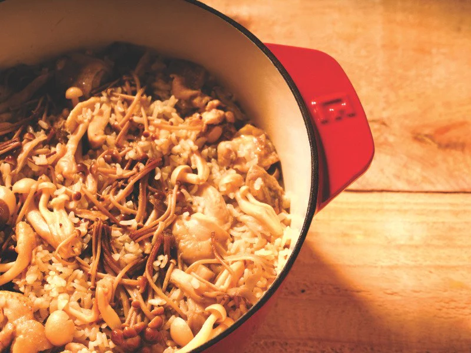
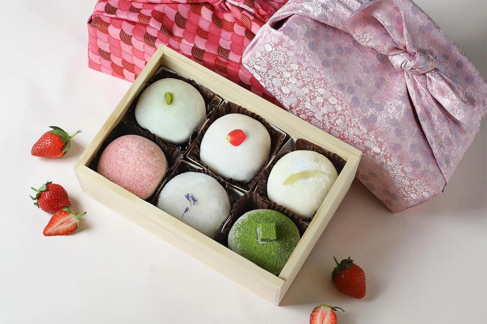

塩漬櫻花胡麻豆腐
手作綿密胡麻豆腐，綴上春天特有的塩漬八重櫻，微鹹與濃郁胡麻在口中化開。

春筍山藥濃湯
現摘鮮脆春筍與日本山藥慢火細熬，不加一滴麵粉，純粹靠著山藥的自然黏性勾勒出豐盈口感。

春雞野菇土鍋炊飯
選用在地越光米與嫩煎春雞，在土鍋中燜出淡淡的蕈菇與米香，是春季最具飽足感的溫暖主食。

艾草草莓大福佐宇治抹茶
帶著草本清香的艾草外皮，包裹著整顆多汁的春季草莓與綿密紅豆沙，搭配現刷抹茶的微苦平衡。